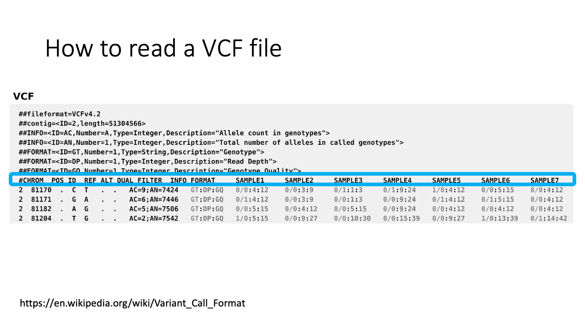

Last updated: 2022-10-08
Checks: 2 0
Knit directory: Bio322/
This reproducible R Markdown analysis was created with workflowr (version 1.7.0). The Checks tab describes the reproducibility checks that were applied when the results were created. The Past versions tab lists the development history.
Great! Since the R Markdown file has been committed to the Git repository, you know the exact version of the code that produced these results.
Great! You are using Git for version control. Tracking code development and connecting the code version to the results is critical for reproducibility.
The results in this page were generated with repository version b929869. See the Past versions tab to see a history of the changes made to the R Markdown and HTML files.
Note that you need to be careful to ensure that all relevant files for
the analysis have been committed to Git prior to generating the results
(you can use wflow_publish or
wflow_git_commit). workflowr only checks the R Markdown
file, but you know if there are other scripts or data files that it
depends on. Below is the status of the Git repository when the results
were generated:
Ignored files:
Ignored: .DS_Store
Ignored: .RData
Ignored: .Rhistory
Ignored: .Rproj.user/
Ignored: analysis/.DS_Store
Untracked files:
Untracked: 210922_genome expression_epigenetics.pptx
Untracked: 210927.module1.2.RNAseq_on_Galaxy.pdf
Untracked: 220317_Advanced topics in genomics.docx
Untracked: 220317_Advanced topics in genomics_MarieSai.docx
Untracked: BIO322_Teaching plan BIO322 2021.docx
Untracked: Bio322.09132021.pdf
Untracked: Bio322.09132021.pptx
Untracked: Bio322.09152021.backup.pptx
Untracked: Bio322.09152021.pdf
Untracked: Bio322.09152021.pptx
Untracked: Bio322.09202021.pdf
Untracked: Bio322.09202021.pptx
Untracked: Bio322.09272021.pptx
Untracked: Bio322.09272021/
Untracked: Bio322scRNAseq.tsv
Untracked: Galaxy1-[intestinalData.tsv].tabular
Untracked: Galaxy2.txt
Untracked: Group.csv
Untracked: analysis/2022_genome.function2.Rmd
Untracked: analysis/Evolution_for_lab.Rmd
Untracked: analysis/_site/
Untracked: analysis/genomebrowser_for_lab.Rmd
Untracked: analysis/tutorial.RNAseq.foradults.xlsx
Untracked: bio322.xlsx
Untracked: bio322_2022.pptx
Untracked: chr15_inversion-v1.0.0.zip
Untracked: gene_regulation_bio322_2022.pptx
Untracked: gwassim.txt
Untracked: intestinalData.tsv
Untracked: main_workflow.ga
Untracked: markdown_test/
Untracked: mouse_intestine_scRNAseq.txt
Untracked: oharring-chr15_inversion-9615456/
Untracked: science.abg0718_data_s1_to_s8.zip
Untracked: science.abg0718_data_s1_to_s8/
Untracked: scrna_tenx.ga
Note that any generated files, e.g. HTML, png, CSS, etc., are not included in this status report because it is ok for generated content to have uncommitted changes.
These are the previous versions of the repository in which changes were
made to the R Markdown (analysis/2022_genome.function1.Rmd)
and HTML (docs/2022_genome.function1.html) files. If you’ve
configured a remote Git repository (see ?wflow_git_remote),
click on the hyperlinks in the table below to view the files as they
were in that past version.
| File | Version | Author | Date | Message |
|---|---|---|---|---|
| Rmd | b929869 | mariesaitou | 2022-10-08 | wflow_publish("analysis/2022_genome.function1.Rmd") |
| html | ab351d7 | mariesaitou | 2022-10-04 | Build site. |
| Rmd | c9b08bd | mariesaitou | 2022-10-04 | wflow_publish("analysis/2022_genome.function1.Rmd") |
Goal: Today, we learn about how to analyze genetic variants between individuals of the same species.
How to read a “variant call format” (VCF) file
How to investigate the phenotypic effect of variants
ref: Variant calling format: VCF file

Header with “#” — information field.
CHROM: chromosome of the variant location
POS: position of the variant
ID: ID of each variant to make it easy to manage
REF: reference allele (the same type as the reference genome)
ALT: alternative allele (the mutant type which is different from the reference genome)
QUAL FILTER INFO FORMAT: variant calling quality and other detail of the variant
Samples… Genotype. “0” means “reference type”, “1” means “alternative type”
The first variant is at chromosome 2, 81170 base.
The first variant’s reference allele is C, alternative allele is T.
For The first variant, Sample1’s genotype is C/C, Sample2’s is C/C, Sample3’s is C/T.
You found a genetic variant in your sequenced individual. You want to investigate the potential effect of the variants.
Assume that you found the following deletion polymorphism at in a rabbit genome.
12: 107,236,296-107,236,969
Go to the Variant Effect Predictor
Input the following information:
Species - rabbit (Oryctolagus_cuniculus)
Variant - 12 107236296 107236969 DEL + deletion1
the variant format, left to right … chromosome, starting point, ending point, kind, strand, variant ID (you can name it as you like)
Variants.
You can also find various acceptable input formats here
The result shows that the deletion is affecting a gene, SLC35F1, by causing coding sequence variant, splice variant, feature truncation and intron variant. You can modify the result table by clicking “show/hide columns”
Now you found that the variant is overlapping a gene, and you want to know the function of the gene.
Click “ENSOCUG00000015307” to know more about this gene.
Sometimes, gene function information is not well described in non-model species. But in other species such as mouse, the homologous gene function may have been investigated.
In the gene page, you can investigate its evolutionary history and potential function.
Let’s explore “gene gain/loss tree” “Onthologies”and “Phenotypes”
Gene gain/loss tree
Most of mammalian species have two copies of this gene.
See what is happening in fish!
Gene Ontology The gene is related to “transmembrane transtport”.
Phenotypes. There is no phenotype information for this gene in rabbits, but there are some reports in mouse and rat, such as leukocyte cell number etc.
Now, you have a VCF file - click here of dogs (Canis_lupus_familiaris).
Please explore the genetic variation in the file with the tools above.
Q1-1. How many variants are there in the VCF file?
Q1-2. How many individuals are there in the VCF file?
Q1-3. What is the genotype of sample 1 for variant 1?
Q1-4. What is the reference and alternative alleles of variant 2?
Q1-5. Please describe the genotype frequency of variant 3.
Q1-6. Please describe the allele frequency of variant 15.
A1-1. 15 variants
A1-2. 18 samples
A1-3. GG
A1-4. Reference: T. Alternative: TAGACACTGTCTACCGAAATGTAGACACTGTCTACCGAAATG
A1-5.
There are sixteen 0|0, one 0|1 and one 1|1 individuals.
Each genotype frequency is:
G/G:0.056 (1 out of 18)
G/GGG:0.89 (16 out of 18)
GGG/GGG:0.056 (1 out of 18)
A1-6.
There are fifteen 0|0, two 0|1 and one 1|1 individuals.
There are 2 * 18 = 36 alleles (each individual has two alleles)
Each allele frequency is:
A allele: 0.89 (15 * 2 + 2 * 1 = 32, 32 our of 36)
G allele: 0.11 (2 * 1 + 1 * 2 = 4, 4 out of 36)
Q2-1 How many genes were overlapped with submitted variants?
Q2-2 How many variants are overlapped with intronic regions?
Q2-3 How many variants are known, and how many are not reported?
Q2-4 What kind of exonic variants are there?
Q2-5 What are the predicted amino acid changes by the “missense variant” among them? Which exon is it?
A2-1. Three (LCT, SPOPL, UBXN4)
A2-2. Ten variants
A2-3. Nine variants are already reported (existing), and six variants are not reported (novel).
A2-4. inframe_insertion, synonymous_variant, frameshift_variant, missense_variant
A2-5. Q -> R (Glutamine -> Arginine), the 8th of the 17 exons.
Q3-1 What is the “ontology” of the LCT gene?
Q3-2 What is the phenotype of the LCT-deficient rodents?
Q3-3 Do mammalian and non-mammalian species have the same number of the LCT gene?
A3-1
Molecular function: protein homodimerization activity
Cellular component: plasma membrane
Biological process: metabolic process
— LCT is located in membrane, and contributes to metabolic process with its protein homodimerization activity.
Show/hide columns (1 hidden)
A3-2
Lactose Intolerance, Diarrhea, colitis etc.
A3-3
Most mammals have one LCT gene. Fish species have variable number of LCT gene, such as eight genes in Bicolor damselfish.